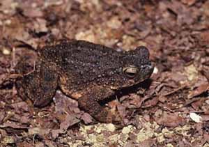

<body text="#000000" bgcolor="#FFFFFF" background="bg311.gif">

∆јЅј ¬ќƒяЌјя (Pseudobufo subasper) живет на ћалайском архипелаге, достигает 150 мм длины, внешне очень напоминает обыкновенных жаб, но унее мощные плавательные перепонки между пальцами задних лап.<br> 